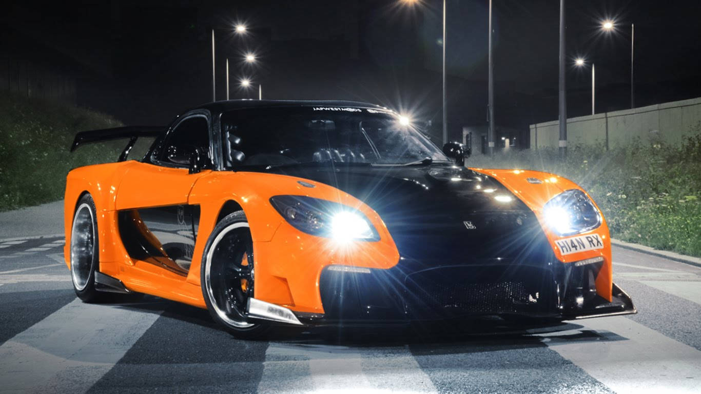
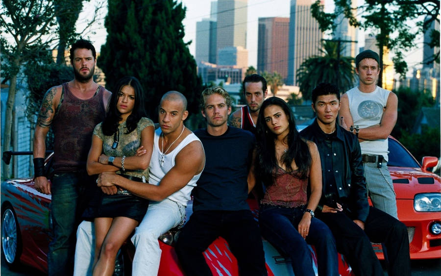
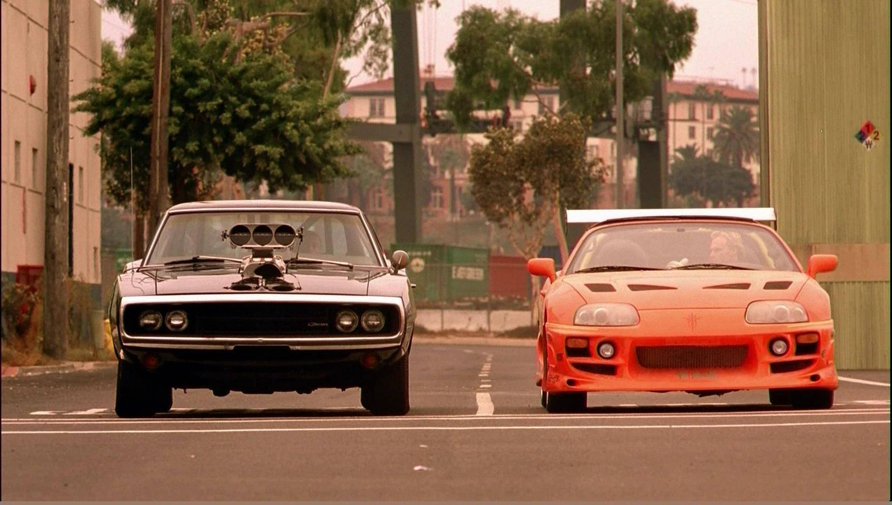
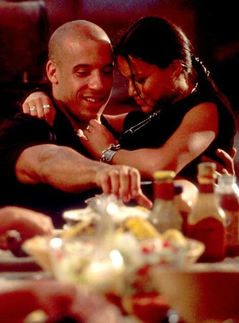

A franquia Velozes e Furiosos é muito mais que apenas carros e corridas. Desde 2001, ela conquistou corações no mundo inteiro com adrenalina, ação e, claro, muita família. São mais de 10 filmes, cada um com sua emoção única, personagens marcantes e trilhas sonoras inesquecíveis.
Do underground de Los Angeles ao mundo do crime internacional, a saga cresceu junto com o público — mas o que nunca mudou foi o amor pelos carros, velocidade e a importância da lealdade. É uma verdadeira celebração da cultura automotiva e da irmandade.
"Desafio em Tóquio" é o terceiro filme da franquia, e é considerado por muitos — inclusive por mim — o mais estiloso e ousado de todos. Ambientado nas ruas iluminadas de neon de Tóquio, o filme apresenta o universo do drift com cenas de corrida inacreditáveis e visual vibrante.
O personagem Han, que se tornou um dos mais amados da franquia, brilha nesse filme. Seu carro laranja, um Mazda RX-7 Veilside, virou ícone da cultura automotiva. A atmosfera japonesa, a trilha sonora marcante e o estilo dos personagens fazem desse filme uma verdadeira obra de arte da franquia.
Curiosidade: muitas cenas foram gravadas de verdade nas ruas de Tóquio — sem permissão! A equipe de filmagem usou câmeras escondidas e gravou várias tomadas de forma clandestina.



